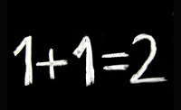

In what concerns the continuous evaluation solving exercises grade during the semester, you should submit until 23:59 of October 25th
(this exercise will still be available for submission after that deadline, but without couting towards your grade)
[to understand the context of this problem, you should read the class #03 exercise sheet]

Given a set S of N integers, and a sequence of Q queries, each indicating a number Xi, your task is to find out which sum of two different numbers from S is closest to the number Xi in each question.The first line of the input contains a single number indicating N, the size of the set S of numbers. The second line contains the numbers Si in the set (it is guaranteed that they are all distinct numbers).
The third line contains a number Q, indicating the number of questions, followed on the fourth line by the Xi numbers for each question.
The output should consist of Q lines, one for each question, in the same order as in the input. Each line should indicate the sum closest to the respective question. If there are two distinct sums at the same minimum distance, both should be shown, in ascending order and separated by a space.
The following limits are guaranteed in all the test cases that will be given to your program:
| 2 ≤ N ≤ 1 000 | Size of the set of numbers | |
| 1 ≤ Si ≤ 106 | Integers in the set | 1 ≤ Q ≤ 10 000 | Quantity of queries |
| 1 ≤ Xi ≤ 106 | Number in each query |
| Example Input | Example Output |
6 12 3 17 5 34 33 4 1 51 41 21 |
8 51 39 20 22 |
Explanation of the example:
In this case we have S = {3,5,12,17,33,34} and 4 queries